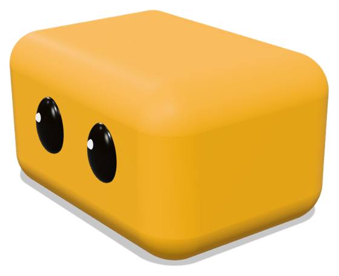

Grassmarket, 34 min

Unsure
990 m nobody has measured
Grassmarket
34min
UnsureFine most of the way. One stretch nobody’s measured yet.
- Warrender Park RoadLevel97m
- Marchmont RoadAbout 5% down204m
- South Meadow WalkLevel250m
- Nine streetsNobody has measured990m
- West Port to GrassmarketMeasured, inside 8%359m
Goes round Candlemaker Row, 8.1% down. Adds 9 min.